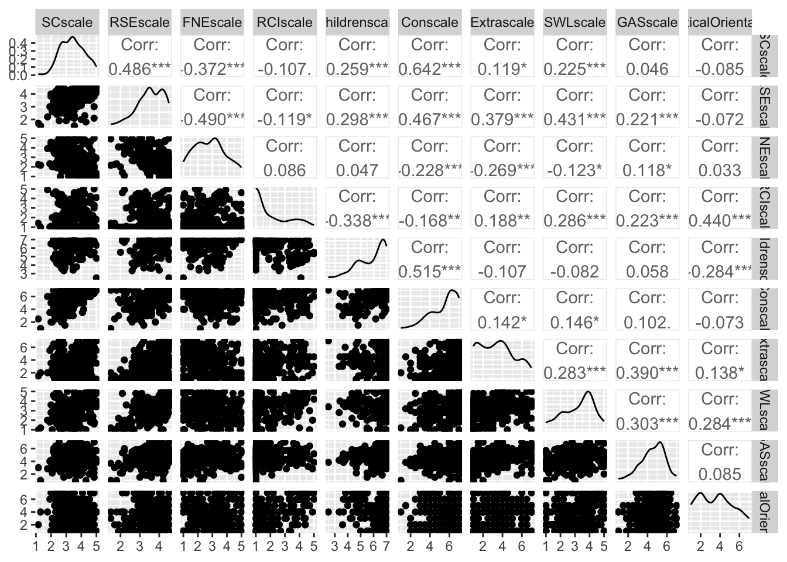
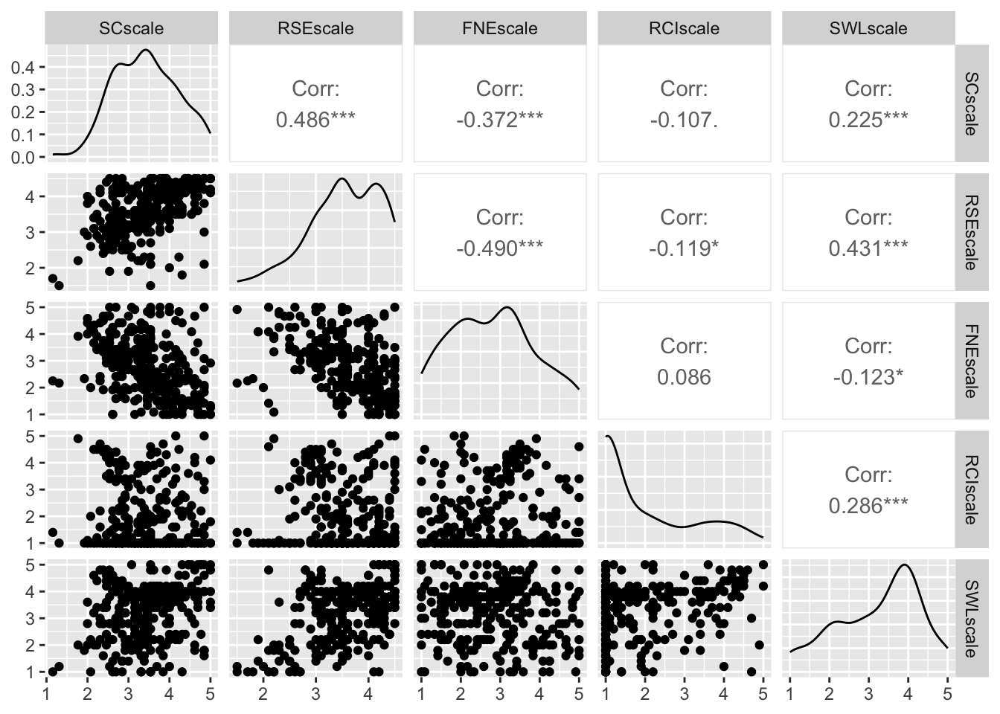
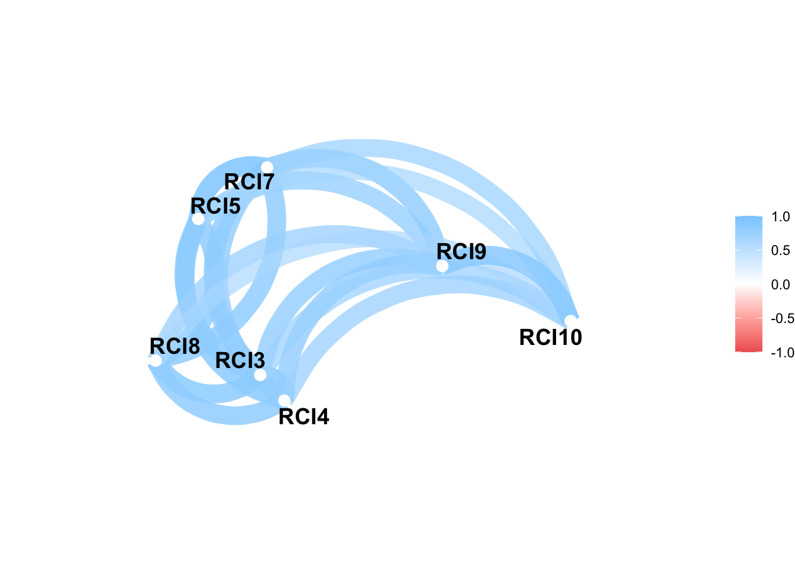
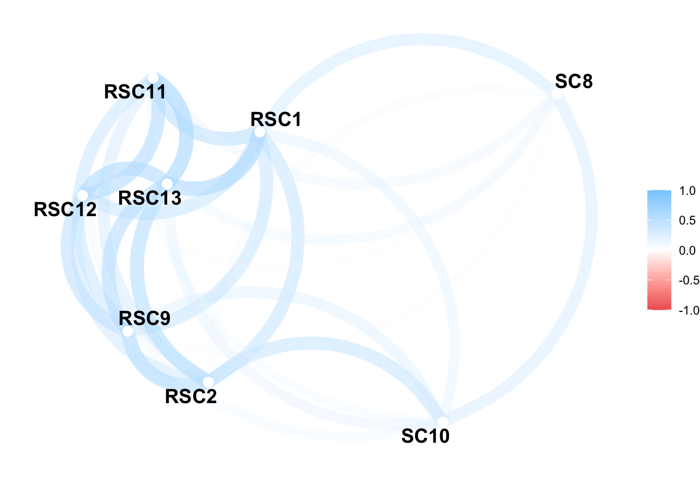
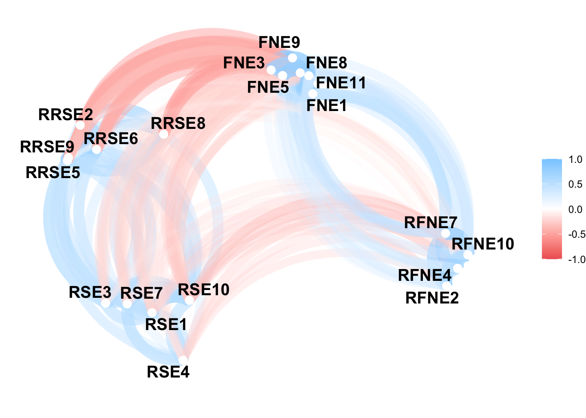

Correlation Matrix, Scatter Plot Matrix, and Network Plots
I am a PSY211 TA, and one of my main responsibilities is grading research reports. I help students learn how to use SPSS to analyse their hypotheses, but I could use some practice doing it in R. In this portfolio, I will use R to create scales, and then I will create a correlation matrix among many of the personality variables, and then I will make a series of heatmaps and network plots to visualize relationships between scales, as well as relationships among items within a scale. It will be fun for me to see relationships among variables at a larger scale, after I have spent so much time reading reports about this datasets.
First, I am going to load the dataset that they use for their projects:
library(haven)
library(ggplot2)
library(rstatix)
library(dplyr)
library(psych)
library(qgraph)
library(visdat)
library(corrr)
library(GGally) #[Found it here](https://r-graph-gallery.com/correlogram.html)
Data <- read_sav("~/Documents/GitHub/Data-Science-for-Psych-Portfolio/OnlinePsychologySurveyData.sav")Next, I will create scales for self-control, self-esteem, fear of negative evaluation, religiosity, political orientation, child-oriented, conscientousness, extraversion, emotional stability, satisfaction with life, and group affiliation seeking. To make this document more readable I am going to comment out the reliability analysis stuff, as well as the summary stats I did to make sure the recoding was correct each time.
Starting with satisfaction with life:
#5 items mean composited
SWLitems <- Data[,c("SWL1","SWL2","SWL3","SWL4","SWL5")]
#alpha(SWLitems, check.keys = TRUE)
#alpha is .91
#Make the composite
Data$SWLscale <- rowMeans(Data[,c("SWL1","SWL2","SWL3","SWL4","SWL5")], na.rm = TRUE)
#summary(Data$SWLscale)Next, religiostiy :
#10 items mean composited, no recodes
Religiosityitems <- Data[,c("RCI1","RCI2","RCI3","RCI4","RCI5","RCI6",
"RCI7","RCI8","RCI9","RCI10")]
#alpha(Religiosityitems, check.keys = TRUE)
#alpha is .97
#mean composite
Data$RCIscale <- rowMeans(Data[,c("RCI1","RCI2","RCI3","RCI4","RCI5","RCI6",
"RCI7","RCI8","RCI9","RCI10")], na.rm = TRUE)
#summary(Data$RCIscale)Fear of negative evaluation:
#1-5 scale, 12 items
#R: 2, 4, 7, 10. Average all items to compute a total scale score.
#Recode Variables
#table(Data$FNE2)
Data$RFNE2 <- dplyr::case_when(
Data$FNE2 == 1 ~ 5,
Data$FNE2 == 2 ~ 4,
Data$FNE2 == 3 ~ 3,
Data$FNE2 == 4 ~ 2,
Data$FNE2 == 5 ~ 1,
TRUE ~ NA_real_
)
#table(Data$RFNE2)
#table(Data$FNE4)
Data$RFNE4 <- dplyr::case_when(
Data$FNE4 == 1 ~ 5,
Data$FNE4 == 2 ~ 4,
Data$FNE4 == 3 ~ 3,
Data$FNE4 == 4 ~ 2,
Data$FNE4 == 5 ~ 1,
TRUE ~ NA_real_
)
#table(Data$RFNE4)
#table(Data$FNE10)
Data$RFNE10 <- dplyr::case_when(
Data$FNE10 == 1 ~ 5,
Data$FNE10 == 2 ~ 4,
Data$FNE10 == 3 ~ 3,
Data$FNE10 == 4 ~ 2,
Data$FNE10 == 5 ~ 1,
TRUE ~ NA_real_
)
#table(Data$RFNE10)
#table(Data$FNE7)
Data$RFNE7 <- dplyr::case_when(
Data$FNE7 == 1 ~ 5,
Data$FNE7 == 2 ~ 4,
Data$FNE7 == 3 ~ 3,
Data$FNE7 == 4 ~ 2,
Data$FNE7 == 5 ~ 1,
TRUE ~ NA_real_
)
#table(Data$RFNE7)
#Reliability Analysis
FNEitems <- Data[,c("FNE1","RFNE2","FNE3","RFNE4","FNE5","FNE6",
"RFNE7","FNE8","FNE9","RFNE10","FNE11","FNE12")]
#alpha(FNEitems, check.keys = TRUE)
#alpha equals .94, so we are good to move ahead.
#Make the composite
Data$FNEscale <- rowMeans(Data[,c("FNE1","RFNE2","FNE3","RFNE4","FNE5","FNE6",
"RFNE7","FNE8","FNE9","RFNE10","FNE11","FNE12")], na.rm = TRUE)
#summary(Data$FNEscale)Group affiliation seeking:
#FMSI - Group Affiliation Seeking: 13, 14, 15, 16R, 17, 18, one to seven scale
#recoding item 16 first
#table(Data$FSMI16)
Data$RFSMI16 <- dplyr::case_when(
Data$FSMI16 == 1 ~ 7,
Data$FSMI16 == 2 ~ 6,
Data$FSMI16 == 3 ~ 5,
Data$FSMI16 == 4 ~ 4,
Data$FSMI16 == 5 ~ 3,
Data$FSMI16 == 6 ~ 2,
Data$FSMI16 == 7 ~ 1,
TRUE ~ NA_real_
)
#table(Data$RFSMI16)
#reliability
GASitems <- Data[,c("FSMI13","FSMI14","FSMI15","RFSMI16","FSMI17","FSMI18")]
#alpha(GASitems, check.keys = TRUE)
#Alpha is .84
#Mean composite
Data$GASscale <- rowMeans(Data[,c("FSMI13","FSMI14","FSMI15","RFSMI16","FSMI17","FSMI18")], na.rm = TRUE)
summary(Data$GASscale)## Min. 1st Qu. Median Mean 3rd Qu. Max.
## 1.000 3.833 4.667 4.557 5.333 7.000Self-esteem:
#items 1-10 on a 4pt likert. RSE
#Scoring: R: 2, 5, 6, 8, and 9. Average all items to compute a total scale score
Data$RRSE2 <- dplyr::case_when(
Data$RSE2 == 1 ~ 5,
Data$RSE2 == 2 ~ 4,
Data$RSE2 == 3 ~ 3,
Data$RSE2 == 4 ~ 2,
Data$RSE2 == 5 ~ 1,
TRUE ~ NA_real_
)
Data$RRSE5 <- dplyr::case_when(
Data$RSE5 == 1 ~ 5,
Data$RSE5 == 2 ~ 4,
Data$RSE5 == 3 ~ 3,
Data$RSE5 == 4 ~ 2,
Data$RSE5 == 5 ~ 1,
TRUE ~ NA_real_
)
Data$RRSE6 <- dplyr::case_when(
Data$RSE6 == 1 ~ 5,
Data$RSE6 == 2 ~ 4,
Data$RSE6 == 3 ~ 3,
Data$RSE6 == 4 ~ 2,
Data$RSE6 == 5 ~ 1,
TRUE ~ NA_real_
)
Data$RRSE8 <- dplyr::case_when(
Data$RSE8 == 1 ~ 5,
Data$RSE8 == 2 ~ 4,
Data$RSE8 == 3 ~ 3,
Data$RSE8 == 4 ~ 2,
Data$RSE8 == 5 ~ 1,
TRUE ~ NA_real_
)
Data$RRSE9 <- dplyr::case_when(
Data$RSE9 == 1 ~ 5,
Data$RSE9 == 2 ~ 4,
Data$RSE9 == 3 ~ 3,
Data$RSE9 == 4 ~ 2,
Data$RSE9 == 5 ~ 1,
TRUE ~ NA_real_
)
#reliability, alpha is .91
RSEitems <- Data[,c("RSE1","RRSE2","RSE3","RSE4","RRSE5","RRSE6","RSE7","RRSE8","RRSE9","RSE10")]
#alpha(RSEitems, check.keys=TRUE)
#Mean composite
Data$RSEscale <- rowMeans(Data[,c("RSE1","RRSE2","RSE3","RSE4","RRSE5","RRSE6","RSE7","RRSE8","RRSE9","RSE10")], na.rm = TRUE)
#summary(Data$RSEscale)Self control:
#13 items on a 1-5 scale, called SC
#R: 1, 2, 3, 4, 6, 9, 11, 12, 13.
Data$RSC1 <- dplyr::case_when(
Data$SC1 == 1 ~ 5,
Data$SC1 == 2 ~ 4,
Data$SC1 == 3 ~ 3,
Data$SC1 == 4 ~ 2,
Data$SC1 == 5 ~ 1,
TRUE ~ NA_real_
)
Data$RSC2 <- dplyr::case_when(
Data$SC2 == 1 ~ 5,
Data$SC2 == 2 ~ 4,
Data$SC2 == 3 ~ 3,
Data$SC2 == 4 ~ 2,
Data$SC2 == 5 ~ 1,
TRUE ~ NA_real_
)
Data$RSC3 <- dplyr::case_when(
Data$SC3 == 1 ~ 5,
Data$SC3 == 2 ~ 4,
Data$SC3 == 3 ~ 3,
Data$SC3 == 4 ~ 2,
Data$SC3 == 5 ~ 1,
TRUE ~ NA_real_
)
Data$RSC4 <- dplyr::case_when(
Data$SC4 == 1 ~ 5,
Data$SC4 == 2 ~ 4,
Data$SC4 == 3 ~ 3,
Data$SC4 == 4 ~ 2,
Data$SC4 == 5 ~ 1,
TRUE ~ NA_real_
)
Data$RSC6 <- dplyr::case_when(
Data$SC6 == 1 ~ 5,
Data$SC6 == 2 ~ 4,
Data$SC6 == 3 ~ 3,
Data$SC6 == 4 ~ 2,
Data$SC6 == 5 ~ 1,
TRUE ~ NA_real_
)
Data$RSC9 <- dplyr::case_when(
Data$SC9 == 1 ~ 5,
Data$SC9 == 2 ~ 4,
Data$SC9 == 3 ~ 3,
Data$SC9 == 4 ~ 2,
Data$SC9 == 5 ~ 1,
TRUE ~ NA_real_
)
Data$RSC11 <- dplyr::case_when(
Data$SC11 == 1 ~ 5,
Data$SC11 == 2 ~ 4,
Data$SC11 == 3 ~ 3,
Data$SC11 == 4 ~ 2,
Data$SC11 == 5 ~ 1,
TRUE ~ NA_real_
)
Data$RSC12 <- dplyr::case_when(
Data$SC12 == 1 ~ 5,
Data$SC12 == 2 ~ 4,
Data$SC12 == 3 ~ 3,
Data$SC12 == 4 ~ 2,
Data$SC12 == 5 ~ 1,
TRUE ~ NA_real_
)
Data$RSC13 <- dplyr::case_when(
Data$SC13 == 1 ~ 5,
Data$SC13 == 2 ~ 4,
Data$SC13 == 3 ~ 3,
Data$SC13 == 4 ~ 2,
Data$SC13 == 5 ~ 1,
TRUE ~ NA_real_
)
#R: 1, 2, 3, 4, 6, 9, 11, 12, 13.
SCitems <- Data[,c("RSC1","RSC2","RSC3","RSC4","SC5","RSC6","SC7","SC8","RSC9","SC10","RSC11","RSC12","RSC13")]
#alpha(SCitems, check.keys = TRUE)
#Alpha is .88
#mean composite
Data$SCscale <- rowMeans( Data[,c("RSC1","RSC2","RSC3","RSC4","SC5","RSC6","SC7","SC8","RSC9","SC10","RSC11","RSC12","RSC13")], na.rm = TRUE)
#summary(Data$SCscale)Political orientation:
#single item on a 1-7 scale, so its already all set Child-oriented:
#FSMI 1 to 7 scale
#Caring for Children: 61, 62, 63R, 64, 65R, 66
#Two recodes
Data$RFSMI63 <- dplyr::case_when(
Data$FSMI63 == 7 ~ 1,
Data$FSMI63 == 6 ~ 2,
Data$FSMI63 == 4 ~ 3,
Data$FSMI63 == 3 ~ 4,
Data$FSMI63 == 2 ~ 5,
Data$FSMI63 == 1 ~ 7,
TRUE ~ NA_real_
)
Data$RFSMI65 <- dplyr::case_when(
Data$FSMI65 == 1 ~ 7,
Data$FSMI65 == 2 ~ 6,
Data$FSMI65 == 3 ~ 5,
Data$FSMI65 == 4 ~ 4,
Data$FSMI65 == 5 ~ 3,
Data$FSMI65 == 6 ~ 2,
Data$FSMI65 == 7 ~ 1,
TRUE ~ NA_real_
)
Childrenitems <- Data[,c("FSMI61","FSMI62","RFSMI63","FSMI64","RFSMI65","FSMI66")]
#alpha(Childrenitems, check.keys = TRUE)
#alpha is .73
#mean composite
Data$Childrenscale <- rowMeans( Data[,c("FSMI61","FSMI62","RFSMI63","FSMI64","RFSMI65","FSMI66")], na.rm = TRUE)
#summary(Data$Childrenscale)Conscientousness:
#measured with TIPI Conscientiousness; 3, 8R on a 1-7 scale
#recode
Data$RTIPI8 <- dplyr::case_when(
Data$TIPI8 == 1 ~ 7,
Data$TIPI8 == 2 ~ 6,
Data$TIPI8 == 3 ~ 5,
Data$TIPI8 == 4 ~ 4,
Data$TIPI8 == 5 ~ 3,
Data$TIPI8 == 6 ~ 2,
Data$TIPI8 == 7 ~ 1,
TRUE ~ NA_real_)
Conscientiousitems <-Data[,c("TIPI3","RTIPI8")]
#alpha(Conscientiousitems, check.keys = TRUE)
#alpha is .60
Data$Conscale <- rowMeans(Data[,c("TIPI3","RTIPI8")], na.rm = TRUE)
#summary(Data$Conscale)Extraversion:
#Extraversion: 1, 6R, also the TIPI scale
Data$RTIPI6 <- dplyr::case_when(
Data$TIPI6 == 1 ~ 7,
Data$TIPI6 == 2 ~ 6,
Data$TIPI6 == 3 ~ 5,
Data$TIPI6 == 4 ~ 4,
Data$TIPI6 == 5 ~ 3,
Data$TIPI6 == 6 ~ 2,
Data$TIPI6 == 7 ~ 1,
TRUE ~ NA_real_)
Extraitems <- Data[,c("TIPI1","RTIPI6")]
#alpha(Extraitems, check.keys = TRUE)
#alpha is .74
Data$Extrascale <- rowMeans(Data[,c("TIPI1","RTIPI6")], na.rm = TRUE)
#summary(Data$Extrascale)Now that everything is clean and ready to go, I will produce the correlation matrix of the following variables: self-control, self-esteem, fear of negative evaluation, religiosity, political orientation, child-oriented, conscientousness, extraversion, satisfaction with life, and group affiliation seeking.
df_scales <- Data[,c("SCscale","RSEscale","FNEscale","RCIscale","Childrenscale","Conscale","Extrascale","SWLscale","GASscale","PoliticalOrientation")]
cor_matrix <- cor(df_scales)Next, I will express it as a heatmap using the vis_cor function:
vis_cor(
df_scales,
cor_method = "pearson",
na_action = "pairwise.complete.obs"
)
#go back in and add labels Now I want to make it like a network:
#To make sure the matrix doesn't have any NAs - something wrong with the children scale one
new_scales <-Data[,c("SCscale","RSEscale","FNEscale","RCIscale","Conscale","Extrascale","SWLscale","GASscale","PoliticalOrientation")]
better_cor_matrix <- cor(new_scales)
network_plot(better_cor_matrix, min_cor = 0)
#this made me really happy
ggpairs(df_scales) #way too much going on 
df_scales_subset <- df_scales %>%
select(,c("SCscale","RSEscale","FNEscale","RCIscale","SWLscale"))
ggpairs(df_scales_subset) #its still more condensed than I would like, the dots are too big
Just because I am having a lot of fun, I am going to repeat this with the items within a scale, one with failry high reliability, and another that is only so-so:
#Religiosity items alpha was .97
religion_cor_matrix <- cor(Religiosityitems)
vis_cor(
Religiosityitems,
cor_method = "pearson",
na_action = "pairwise.complete.obs"
)
#these are very correlated, wow
#RCI1, RCI2 and RC16 have a bunch of NAs for some reason, so that is an issue with the network plot. I am going to filter them out
new_religiosity <-Data[,c("RCI3","RCI4","RCI5",
"RCI7","RCI8","RCI9","RCI10")]
new_religion_cor_matrix <- cor(new_religiosity)
network_plot(new_religion_cor_matrix, min_cor = 0)
#this is pretty dense, as you would expect Now for the less reliable scale: self control: still fairly reliable .88
SC_cor_matrix <- cor(SCitems)
vis_cor(
SCitems,
cor_method = "pearson",
na_action = "pairwise.complete.obs"
)
#not nearly as red as religiosity
#a few items are NAs in the correlation matrix, and I am just going to drop them. I am not investing time into trying to fix it.
new_SCitems <-Data[,c("RSC1","RSC2","SC8","RSC9","SC10","RSC11","RSC12","RSC13")]
new_SCitems_matrix <- cor(new_SCitems)
network_plot(new_SCitems_matrix, min_cor = 0)
#this was also cool Last thing I would like to do is map fear of negative evaluation and self esteem together, since the first network plot revealed that there were very related
FNE_RSE <- Data[,c("RSE1","RRSE2","RSE3","RSE4","RRSE5","RRSE6","RSE7","RRSE8","RRSE9","RSE10","FNE1","RFNE2","FNE3","RFNE4","FNE5","FNE6", "RFNE7","FNE8","FNE9","RFNE10","FNE11","FNE12")]
FNE_RSE_matrix <- cor(FNE_RSE)
#FNE6 and FNE12 are the only ones with missing data
vis_cor(
FNE_RSE,
cor_method = "pearson",
na_action = "pairwise.complete.obs"
)
#this is very cool and it makes sense - self esteem looks quite to fear of negative evaluation
#lets filter and make the network plot
new_FNE_RSE<-Data[,c("RSE1","RRSE2","RSE3","RSE4","RRSE5","RRSE6","RSE7","RRSE8","RRSE9","RSE10","FNE1","RFNE2","FNE3","RFNE4","FNE5", "RFNE7","FNE8","FNE9","RFNE10","FNE11")]
new_FNE_RSE_matrix <- cor(new_FNE_RSE)
network_plot(new_FNE_RSE_matrix, min_cor = 0)
#this reveals four different clusters of items, which would suggest that they are each capturing something a little bit different, but still very related, about self esteem and FNE.